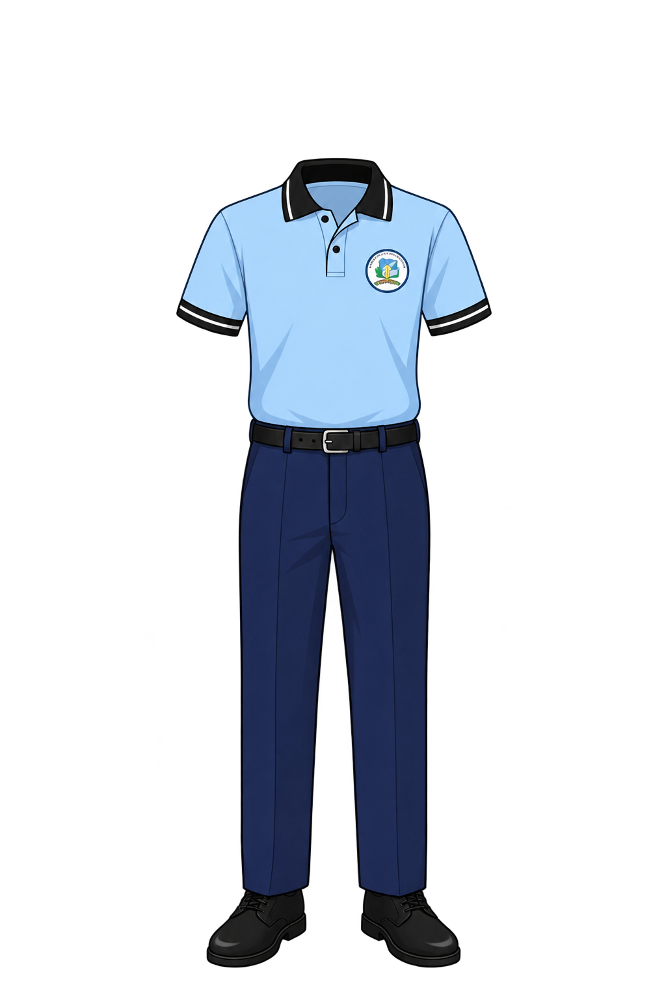
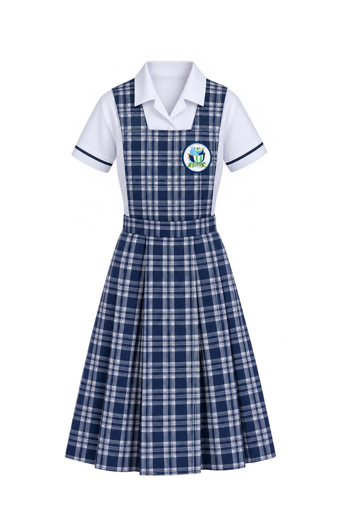
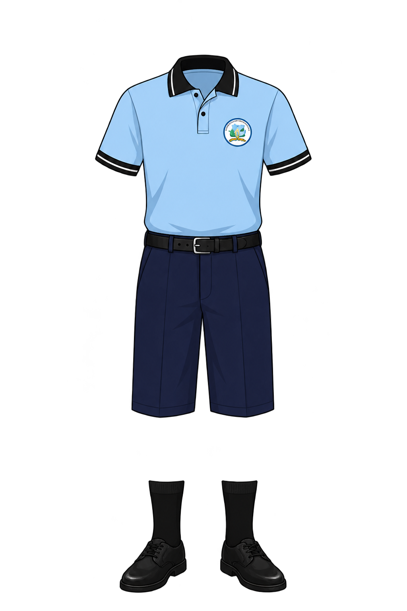

I.E.D. SONIA AHUMADA
IMPARABLES
I.E.D. SONIA AHUMADA
IMPARABLES
MISIÓN
Brindamos educación integral y de calidad desde Preescolar hasta la Media en el Sur-Occidente de Barranquilla, formando seres humanos en valores y con herramientas tecnológicas, capaces de transformar su realidad y construir su propio futuro.
VISIÓN
Proyectamos ser una comunidad educativa referente en la formación de seres integrales y competentes, capacitados para liderar el cambio social, destacar en el campo laboral y aprovechar las TIC con sólidos principios y valores.

Diario Hombre
camisa azul cielo
pantalón azul turquí
medias negras
y zapatos negros

Diario mujer
camisa blanca
jumper
medias blancas
y zapatos negros

Educacion física
camisa blanca azul
sudadera azul
medias blancas
y zapatos blancos

Diario niño
camisa azul cielo
bermuda negra
medias negras
y zapatos negros